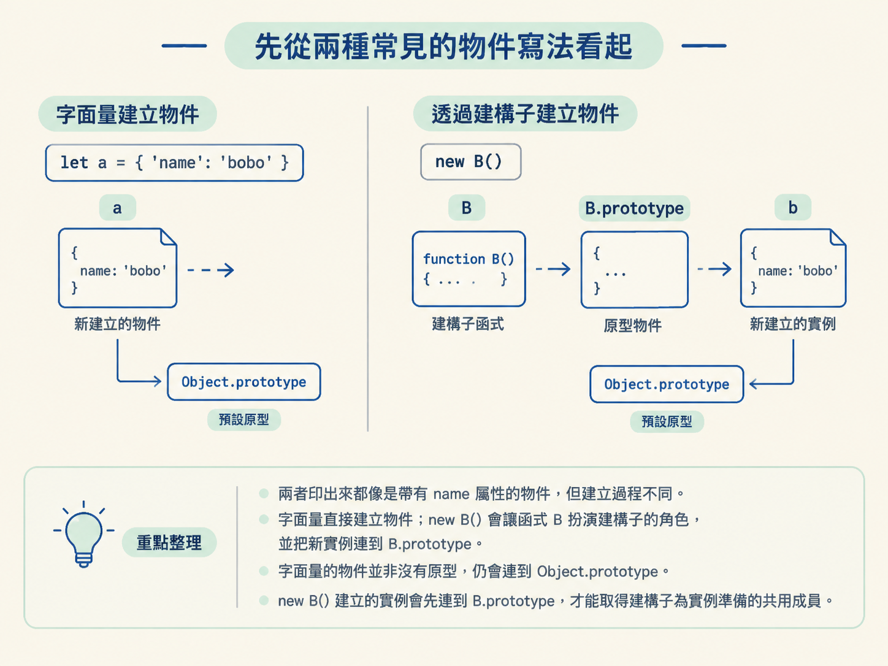
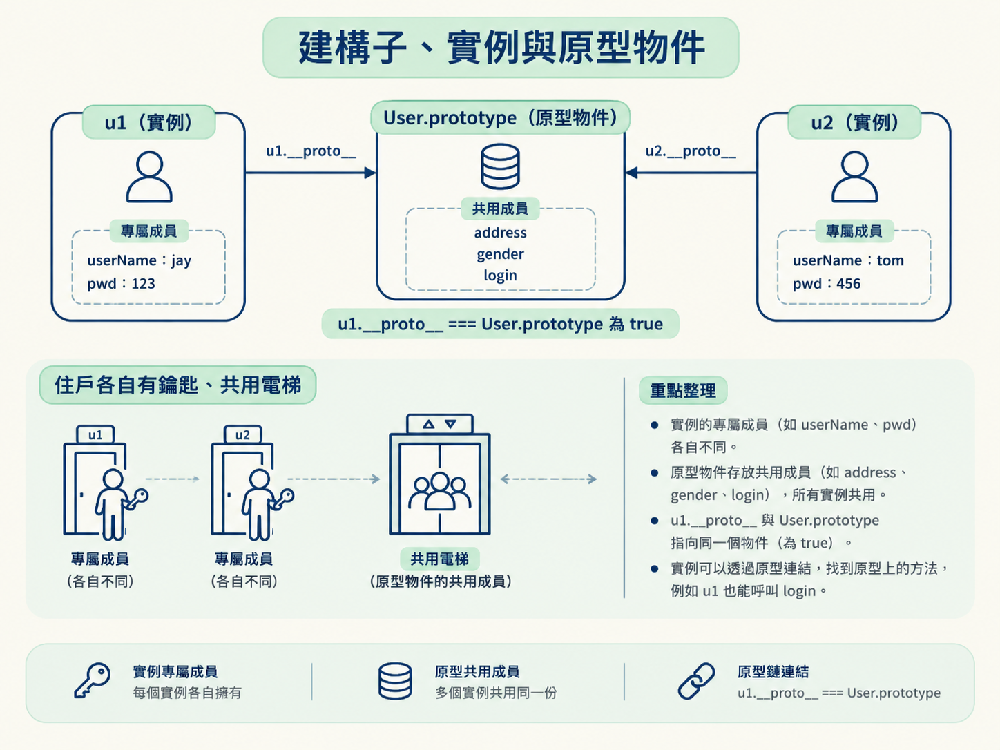
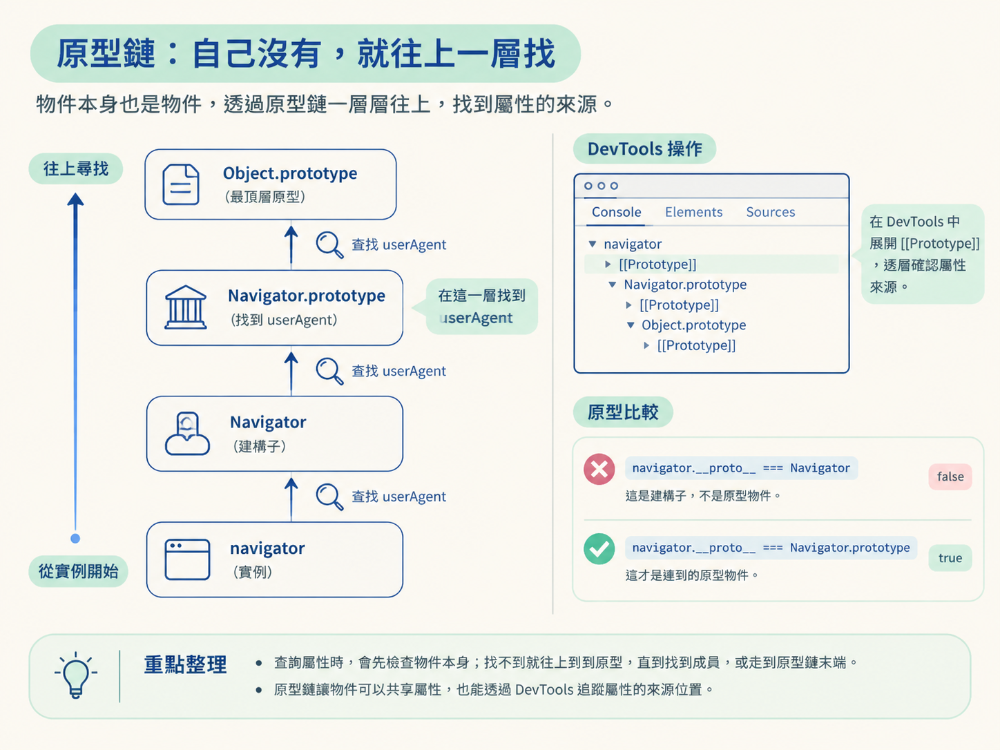

當頁面暫停在某一行時，你會知道如何從一個屬性反問：「它到底掛在哪裡？」接著沿著原型鏈，判斷成員屬於物件本身，還是來自某一層原型。
想像你正在 DevTools 裡追一段反爬程式。頁面暫停後，你看到程式讀取 navigator.userAgent。這時只知道它的值還不夠，你還得知道：userAgent 是直接寫在 navigator 身上，還是沿著原型鏈借來的？
這個差別會直接影響後續的逆向工作。無論是補環境、修改屬性，還是選擇 hook 的位置，都得先找到真正提供成員的那一層。找錯位置，就像想改大樓的總電源，卻只去按某個房間的開關，看似動手了，效果卻可能完全不對。
因此，這一節先建立一張簡單的地圖：物件本身存放自己的成員，原型提供可共用的成員，而原型鏈負責在找不到屬性時繼續往上查。
JavaScript 裡常見的物件建立方式有兩種。第一種是物件字面量，也就是直接用大括號寫出鍵值對；第二種是先定義函式，再用 new 建立實例：
let a = {'name':'bobo'}; //方法1
function B(){this.name="bobo"};
let b = new B(); //方法2
console.log(a);
console.log(b);兩者印出來都像是帶有 name 屬性的物件，但建立過程不同。字面量直接建立物件；new B() 則會讓函式 B 扮演建構子的角色，並把新實例連到 B.prototype。
要注意，字面量建立的物件並不是沒有原型。一般情況下，它仍會連到 Object.prototype。真正值得比較的，是 new B() 建立的實例會先連到 B.prototype，因此可以透過那一層取得建構子為實例準備的共用成員。

函式被 new 呼叫時，就扮演「建構子」的角色。建構子裡指定給 this 的屬性，會放進這次建立的新實例。以下面的 User 為例：
function User(name,pwd){
this.userName = name;
this.pwd = pwd;
this.regist = function(){
console.log(this.name+"在注册")
}
}每次執行 new User(...)，都會得到一個新的「實例物件」。因此，u1 與 u2 會分別擁有自己的 userName 與 pwd：
let u1 = new User('jay','123');
let u2 = new User('tom','456');如果某個資料本來就應該由每位使用者各自持有，例如帳號與密碼，放在實例身上很合理。但若方法要讓所有實例共用，就可以放進建構子的原型物件。這像是每位住戶各自保管房門鑰匙，但共用電梯與樓梯，不必每戶都蓋一套。
下面的 address、gender 與 login 都被放在 User.prototype，所以 u1 和 u2 都能使用：
//类似于类属性
User.prototype.address = "BJ";
User.prototype.gender = "male";
//类似于类方法
User.prototype.login = function login(username, password){
console.log(`${username}在登录`);
}
//实例对象共享原型对象存储的内容
u1.login('jay','123');
u2.login('tom','456');
console.log(u1.address,u2.address,u1.gender,u2.gender);這種做法適合存放共用成員。相反地，如果每個實例都需要不同的值，就不該只把它放在原型上，否則所有實例查到的會是同一份共用內容。
建構子可透過 prototype 取得原型物件；實例則可以沿著內部原型連結抵達同一個物件。以下比較會得到 true：
User.prototype;
u1.__proto__;
User.prototype === u1.__proto__ //trueu1.__proto__ 與 User.prototype 指向同一個物件。這也解釋了為什麼 u1 自己沒有 login，卻仍然可以呼叫它：JavaScript 會順著連結，到 User.prototype 尋找。

原型物件本身也是物件，因此它也有自己的原型。這些物件一層接著一層，就形成「原型鏈」。
查詢屬性時，JavaScript 會先檢查物件本身。若找不到，就到它的原型尋找；還是沒有，便繼續前往更上一層，直到找到成員，或走到原型鏈末端。
u1.__proto__.__proto__這套機制可以直接在 DevTools 驗證。頁面暫停後，先在 Console 查看目標物件，再展開它的 [[Prototype]]，逐層確認屬性究竟出現在哪裡。這比只看目前的屬性值更有用，因為你同時找到了它的來源。
以瀏覽器的 navigator 為例，它的原型是 Navigator.prototype。下面兩個比較也剛好能看出「建構子」與「建構子的原型物件」不是同一個東西：
navigator.__proto__ === Navigator
navigator.__proto__ === Navigator.prototype第一行比較的是 Navigator 建構子，因此結果不是 true；第二行比較的才是 Navigator.prototype，也就是 navigator 連到的原型物件。

當你追查 userAgent 時，可能會在 Navigator.prototype 那一層找到定義，而不是在 navigator 自身找到。這時，若目標是影響所有經由該原型取得成員的物件，原型層會是需要檢查的位置；若只想影響單一實例，則要先確認能否在實例上建立同名成員，以及頁面實際如何讀取它。
因此，原型鏈不是看到屬性就一律修改原型。它真正提供的是判斷依據：先找出成員來自哪一層，再依影響範圍與屬性限制，決定應該從實例還是原型下手。
| 名詞 | 指的是什麼 | 在範例中如何取得 |
|---|---|---|
| 建構子 | 被 new 呼叫、負責建立實例的函式 | User |
| 實例物件 | 由建構子建立，能擁有自己屬性的物件 | new User(...) |
| 原型物件 | 可供實例共用成員的物件 | User.prototype 或 u1.__proto__ |
| 原型鏈 | 從物件一路連往各層原型的查找路徑 | u1.__proto__.__proto__ |
查詢一個成員時，先看物件本身，再沿著原型鏈逐層往上找。透過new User(...)建立的實例會連到User.prototype，因此u1.__proto__ === User.prototype。實例適合保存各自的資料，原型則適合提供共用成員。
回到 DevTools，看到 navigator.userAgent 或其他成員時，不要只停在「它現在是什麼值」。更重要的問題是：「這個值由哪一層提供？」原型鏈就是回答這個問題的查找地圖，也會決定補環境與 hook 時該檢查哪個位置。
找到屬性的來源後，還有下一層問題：它能不能修改、能不能列舉，以及它存放的是一般值，還是由 get 與 set 控制？這些規則由屬性描述符決定。下一節會接著查看 Object 的相關工具與描述符，補上寫 hook 與補環境時需要的另一半判斷依據。